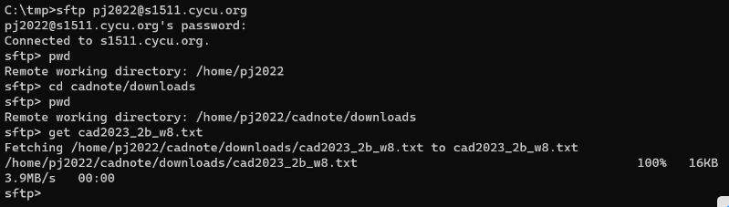

Win11 <<
Previous Next >> 網路設定
w8
針對 Coppeliasim 4.6.0 版的推出:
CoppeliaSim 於 2023.10.21 推出 4.6.0 版. (因為更改不多, 目前可以沿用 4.5.1 rev4, 但仍必須關注 CoppeliaSim 逐步強化 Python scripting 的趨勢(1, 2), 其目的在於能夠更便於在機電整合場景系統中, 導入更多的 AI 相關 Training)
plugin 架構更新, 可加載或卸載 plugin
sim.setThreadAutomaticSwitch is deprecated in favor of sim.setStepping
sim.switchThread is deprecated in favor of sim.step
Command-line option -H now loads the headless version of the CoppeliaSim library.
CoppeliaSim 使用者手冊: https://mde.tw/pjcopsim
zmq Remote API: https://www.coppeliarobotics.com/helpFiles/en/zmqRemoteApiOverview.htm
https://github.com/CoppeliaRobotics/zmqRemoteApi
CoppeliaSim 4.5.1 for IPv6:
下載 CoppeliaSimEdu_4.5.1_rev4_for_cd2023.7z (需要下載密碼)
下載 zmqRemoteAPI Python for cad2023.7z (需要下載密碼)
有關 s1511.cycu.org 主機的使用, 也可以參考 https://mde.tw/cpnote 中各章節頁面內容.
維護網站的三個方式:
- localhost 透過 token, SSH 確定 git push 權限, SSH 設定可透過 Putty 完成
- Replit 透過 connect 功能連結與 Github 的權限
- 自架主機 s1511.cycu.org, 透過 SSH 與分配埠號
以下將說明第 3 種方法, 使用 s1511.cycu.org 管理個人與分組網站:
其中包括 1) 如何遠端登入、2 ) 如何取放檔案、3) 如何與 github 帳號彼此信任、4) 如何取下 cad2023、5) 如何啟動或關閉 cad2023 倉儲、6) 如何連結到動態網站、7) 如何設定靜態網站、8) 如何連動動態網站改版與靜態網頁、9) 如何對資料進行保全以及 10) 網路連線協定等相關議題.
w8_2a_s1511 設定操作影片 part1.mp4
w8_2a_s1511 設定操作影片 part2.mp4
w8_2a_s1511 設定操作影片 part3.mp4 (只有前段有聲音)
1) 如何遠端登入:
遠端登入到 s1511.cycu.org (只支援 IPv6 網路協定), 命令列指令 ssh client, 工具可以使用 Putty
使用 ssh 指令: ssh 帳號@s1511.cycu.org 然後輸入密碼 (鍵入密碼時螢幕並不會顯示字元)
使用 putty.exe 設定 session 令其連接到 s1511.cycu.org
登出指令為 exit
假如在 IPv4 網路協定下, 則 ssh 指令與 putty.exe 都必須透過能支援 IPv6 的代理主機進行連線.
2b w8 作業: 請根據 cad2023_2b_w8.txt 檔案中的內容, 透過程式的讀取與篩選, 按照時間先後, 列出 2b 修課學員中已經登入 s1511.cycu.org 的學號. (修課學員名單 2a: 0838, 2b: 0851)
假如在近端處理, 必須同時儲存兩個檔案後, 進行資料選取:
get_stud_num_from_last_data.py (若採 Brython 編寫, 可以直接列出 2b w8 結果 (2a w8 結果), 依照登入時間先後排序, 其中 41123227 為管理者最早測試時登入, 若採用 ANSI 編寫: c_parse_last_cp2023.7z)
# 讀取學號檔案
with open("2b_user_list.txt", 'r') as user_file:
user_lines = user_file.read().splitlines()
# 讀取 last 指令轉出的檔案, 以 last -w > cad2023_2b_w8.txt 建立檔案
with open("cad2023_2b_w8.txt", 'r') as cad_file:
# 以下是利用跳行符號, 將每一行區隔成數列
cad_lines = cad_file.read().splitlines()
#print(cad_lines)
# 從 cad_lines 建立所有登入使用者數列
login_users = []
for i in cad_lines:
line_list = i.split(" ")
login_users.append(line_list[0])
#print(login_users)
# 根據 https://stackoverflow.com/questions/480214/how-do-i-remove-duplicates-from-a-list-while-preserving-order
# 數列去除重複元素但仍保持原始次序
login_users = list(dict.fromkeys(login_users))
#print(login_users)
# 建立數列存放符合條件的使用者
valid_users = []
# 取出符合條件的使用者
for line in login_users:
if "cad" in line:
# 將 cad 字串去除
user_number = line.replace("cad", "")
if user_number in user_lines:
valid_users.append(user_number)
# 利用 reverse() 將 valid_users 反向排序
valid_users.reverse()
# , 最早登入者列在最前面
for user in valid_users:
print(user)
2) 如何取放檔案:
利用 sftp 從 s1511.cycu.org 取下檔案畫面:

進入對應的目錄之後, 以 pwd 確認所在目錄後, 以 get 取下檔案, 以 put 放上檔案, 例如: 進入 images 目錄後, 可以透過 get gd_ex1.png 取下圖檔, 若要將圖檔放入 images 目錄, 則只要確定 sftp 進入後, cd 到 images 目錄, 然後以 put gd_ex1.png 將圖檔送入.
3) 如何與 github 帳號彼此信任:
利用 ssh-keygen 在 .ssh 目錄建立 id_rsa 與 id_rsa.pub, 之後將 id_rsa.pub 登記到各自帳號下 settings 的 SSH and GPG keys 區域.
.ssh 目錄中的 config, 將 SSH session 名稱設為 github.com:
Host github.com
User git
Hostname github.com
ProxyCommand /usr/bin/ncat --proxy p4.cycu.org:3128 --proxy-type http %h %p
將 上列 config 送到帳號下的 .ssh 目錄之後, 就可以利用 github.com 作為 session, 從 github.com 取下 cad2023 倉儲, 並且已經具備 git push 的權限.
4) 如何取下 cad2023:
以 SSH 協定取下 cad2023 的指令:
git clone --recurse-submodules git@github.com:帳號/cad2023.git
接下來必須從 cad2023 取下 server.py 進行編輯, 放入自己分配到的 9xxx 埠後, 再送回.
5) 如何啟動或關閉 cad2023 倉儲:
當使用者已經將上述 public key 登錄到 Github 帳號下, 且已經將 server.py 中的 9xxx 改為自己所分配到的內部埠號後再送回, 則可以利用 python3 server.py 啟動編輯網站, 並測試是否可以連線到 https://s1511.cycu.org:8xxxx
由於管理者內建密碼為 admin, 使用者修改後, 編碼字串將存入 config/config, 此檔案必須設為只有管理者可以 read, 若目前位於登入後的工作目錄, 則其指令為:
chmod og-rwx config/config
表示要將 others 與 group 針對 config/config 檔案的 read, write 與 execute 權限取消.
若希望使用者登入後動態網站仍然執行, python3 server.py&
當 server.py 已經啟動, 使用者登入後可以利用以下指令, 列出各使用者啟動網頁編輯所對應的 PID (Process ID):
ps -axo pid,comm,uname | grep "python3"
各用戶若希望刪除已經啟動的 Process, 可以找到所啟動的 PID 後, 以下列指令關閉服務 (若 PID = 1234):
kill 1234
其中, 系統管理者可以刪除所有 Processes, 而各用戶只能刪除各自所啟動的 Process.
6) 如何連結到動態網站:
python3 server.py 啟動測試是否可以連線到 https://s1511.cycu.org:8xxxx
編輯網站啟動之後, 使用者登入後可以透過 config 指令修改管理者密碼, 而此一密碼的編碼將存入 s1511 主機倉儲檔案中的 config/config 檔案中, 且此一檔案將只會位於 s1511, 而不會被推向 github.com (因為 .gitignore 的設定).
當使用者決定要進行 git add 與 git commit 之前, 必須先以 git config 設定 user.name 與 user.email, 此設定將會存入 .gitconfig 檔案中.
7) 如何設定靜態網站:
前面已經在 /home/帳號/倉儲目錄 透過 SSH 協定從 github.com 取下檔案內容, 由於 SSH keys 的設定, 此一倉儲一旦改版, 可以在新增提交之後, 可以透過 git push 指令將改版資料推向 github.com.
當倉儲的靜態網站 git push 至 github.com 後, 將會透過 Github Pages 的設定進行轉檔.
若使用者希望在 s1511 主機中伺服對應的倉儲靜態網站, 則可以將倉儲檔案放入帳號中的 public_html 目錄中.
由於位於 public_html 僅需鏡射位於 github.com 中的倉儲檔案資料, 並不作為 git commit 與 git push 之用, 因此可以利用 git clone --recurse-submodules https://github.com/帳號/倉儲名稱.git 取下 (也就直接以 https 協定取下倉儲內容), 並可在 https://s1511.cycu.org/~帳號/倉儲名稱 中擷取靜態網站資料.
8) 如何連動動態網站改版與靜態網頁:
當每次 /home/帳號/倉儲 中的檔案改版, 而且資料已經推送到 github.com, 使用者就可以進入 public_html 中的對應倉儲目錄, 以 git pull 指令從 github.com 取得最新的版本資料, 此指令可以採手動, 也可以設法納入倉儲的 acp 指令中:
acp 必須納入 public_html 目錄中的靜態網站 git pull, 且利用 chmod u+x acp 令其可以執行.
acp 內容:
#! /bin/bash
git add .
git commit -m "$1"
git push
cd ./../public_html/cad2023
git pull
9) 如何對資料進行保全:
chmod u+x acp
chmod og-rwx config/config
chmod 711 /home/cad學號
chmoe 755 /home/cad學號/public_html
假如自己所分派到的網路 port 遭到占用, 可以利用下列指令查出使用該埠號的使用者帳號:
例如要查詢埠號 9210 埠號的使用情形, 指令為 lsof -i :9210, 其中 ls 為 list, of 為 open file, -i 中的 i 為 internet, :9210 表示要求列出與 port 9210 有關 internet 使用相關的資料.
10) 網路連線協定:
將 cad2023 倉儲資料取到 s1511.cycu.org 帳號下, 若使用 SSH 協定且位於只有 IPv6 網路協定, 則分別牽涉以 SSH 及 https 協定連線到 github.com 的設定.
其中所謂運用 SSH 協定與 github.com 連線, 運用在 git clone --recurse-submodules git@github.com:帳號/cad2023.git 因為其流程是利用 SSH 協定以 git 作為帳號登入到 session 名稱為 github.com 的連線主機 (即 config 中的 Hostname 設定), 能不能遠端登入則取決於 github.com session (即 config 設定檔案中的 Host 名稱) 後面的帳號是否已經登錄與目前 .ssh/id_rsa 所對應的 public key.
至於在純 IPv6 網路下的 s1511.cycu.org 其 https 所需的 proxy 設定, 已經由管理者設定於 /etc/environment 中, 因此所有使用者都無需設定.
電腦輔助設計與實習課程分組網站在 s1511.cycu.org 所分配的外部與內部埠號:
cad2023_ag1: 8232, 9232
cad2023_ag2: 8233, 9233
cad2023_ag3: 8234, 9234
cad2023_ag4: 8235, 9235
cad2023_ag5: 8236, 9236
cad2023_ag6: 8237, 9237
cad2023_bg1: 8238, 9238
cad2023_bg2: 8239, 9239
cad2023_bg3: 8240, 9240
cad2023_bg4: 8241, 9241
cad2023_bg5: 8242, 9242
cad2023_bg6: 8243, 9243
w8 登入查驗完成名單:
2a:
41023134
40923118
41123145
41123137
41123153
40923127
41123139
41123108
40923213
41123117
41123141
41023245
41123122
41123152
41123129
41123149
40923139
40923124
41123131
41123135
2b:
41123243
41123241
41123249
41123214
41123224
41123228
41123215
41123245
41123216
41123204
41123234
41123244
41123235
41123240
41123229
41123209
41123207
41123246
41123250
41123201
41123217
41123251
41123218
模擬參考:
https://www.researchgate.net/publication/263466730_Mathematical_Modeling_of_Electromagnetic_Levitation_Ball_using_Bondgraph
https://hal.science/hal-02408779v1/file/Magnetic_Canon.pdf
Win11 <<
Previous Next >> 網路設定